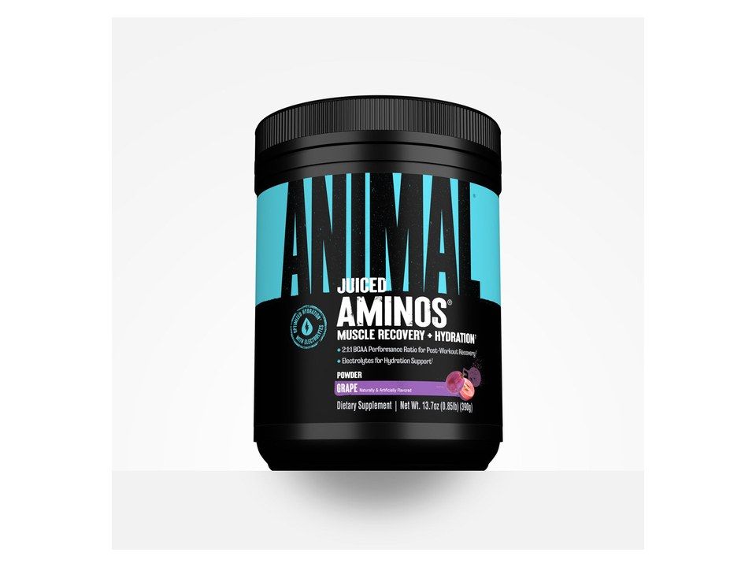

Product imagery supplied by the retailer. Packaging may vary — verify the Supplement Facts panel on the container you receive.
Animal
Juiced Aminos
Our analysis — editorial take, not from the label
A pooled 5 g BCAA blend does almost all the amino work here: the other six essentials come to 900 mg between them, and the leucine share is the one number the panel withholds. Betaine and taurine at 1.25 g each are real doses, while the hydration half of the billing is 100 mg of sodium and 10 mg of magnesium.
- EAAs
- 5.9 g
- BCAAs
- 5 g
- Leucine
- —
- Servings
- 30
Price tier: Mid-range · relative cost per full serving across this database
We don't list dollar prices — they change daily and go stale. Check the live price instead:
View current price at Amazon Compare all amino formulasScoop Sense doesn't collect user reviews and won't invent them. Read customer reviews on Amazon
Affiliate links — Scoop Sense may earn a commission at no additional cost to you.
Four flavors — Grape Juiced, Orange Juiced, Fruit Punch and Strawberry Limeade — naturally and artificially flavored and sweetened with sucralose plus acesulfame potassium; the scoop weight shifts a little by flavor (12.5 g Fruit Punch, 12.6 g Strawberry Limeade, 12.8 g Orange Juiced) and the 390 g net weight is the Grape tub's.
Label verified: September 2026 · View supplement facts image
Label data
Per full serving · 30 servings per container · from the manufacturer's panel
| Total EAAs | 5.9 g |
|---|---|
| BCAAs | 5 g |
| Anabolic BCAA & EAA Matrix (incl. Instant BCAA Blend) | 6 g |
| Betaine Anhydrous | 1.25 g |
| L-Taurine | 1.25 g |
| L-Glutamine | 1 g |
| Proprietary blend | Total only — source ratio undisclosed |
Primary label source: Animal (Universal Nutrition) — official product page: four flavors, 30 servings, caffeine-free, front-of-tub art reading Net Wt. 13.7 oz (390 g) · verified September 2026
Cautions
- The branched-chain aminos are pooled into one 5 g Instant BCAA Blend, so the leucine share is not printed — the 2:1:1 ratio appears only on the front of the tub
- The label directs at least two servings a day, which takes the 30-serving tub to about 15 days at its own dosing
- Sweetened with sucralose and acesulfame potassium; the colorant is flavor-specific — beet root powder on the Fruit Punch and Strawberry Limeade panels, turmeric root powder on Orange Juiced
Formulated for healthy adults — not intended for anyone under 18. Full health & safety notes
Product details
Where this label sits
Animal Juiced Aminos is one of the amino formulas in the Scoop Sense database. The label uses at least one proprietary blend, so a blend total stands in place of the individual amounts inside it. It runs 30 servings per container at the full labeled serving. Everything on this page comes from the manufacturer's supplement facts panel as of September 2026 — never from the marketing page.
Key ingredients & studied doses
- Anabolic BCAA & EAA Matrix (incl. Instant BCAA Blend) · 6 g. All nine essential amino acids are present, but the total sits under the roughly 10 to 15 g used in most free-form EAA research, and the branched-chain trio is pooled so the leucine share is never printed.
- Betaine Anhydrous · 1.25 g. Half the 2.5 g daily amount used in most betaine performance research; the label's own two-servings-a-day direction is what reaches 2.5 g.
- L-Taurine · 1.25 g. Inside the roughly 1 to 3 g single doses used in most taurine exercise studies.
- L-Glutamine · 1 g. Well under the 5 g and larger daily amounts used in most glutamine research, so it reads as a supporting inclusion rather than a studied dose.
Flavors & sweetener
Four flavors — Grape Juiced, Orange Juiced, Fruit Punch and Strawberry Limeade — naturally and artificially flavored and sweetened with sucralose plus acesulfame potassium; the scoop weight shifts a little by flavor (12.5 g Fruit Punch, 12.6 g Strawberry Limeade, 12.8 g Orange Juiced) and the 390 g net weight is the Grape tub's.
Who it's best for
People who want the full essential amino spectrum around training. Skip it if you want every individual dose disclosed on the label. Derived from the label figures above — not medical advice.
How we log this label
Every entry is built the same way: we read the current supplement facts panel, log each disclosed dose, compare it against the amounts used in published research, flag proprietary blends, and state the cautions plainly. The full methodology explains each step.
This label against the research
How we evaluate labelsEach bar shows the amount commonly used in published human research, and where this label's dose falls against it. Research amounts are context, not a recommendation — they are not doses, and nothing here is medical advice. The bars compare what the label states; we do not laboratory-test the product to confirm it.
-
Betaine1.25 g
50% of the low end of the studied range0studied range 2.5 g3.5 g
Trials run from 1.25 g to 5 g a day; 2.5 g, usually split into two doses, is the amount most of them use.
Source: Lee et al., Journal of the International Society of Sports Nutrition 2010 — “Betaine supplement (B) was given as 1.25 grams (g) of betaine (Danisco Inc., Ardsley, NY) in 300 mL of Gatorade© sports drink, taken twice daily”
-
Taurine1.25 g
At or above the studied amount0studied range 1 g–6 g7 g
Trials run from 1 g to 6 g a day, given as single doses or for up to two weeks, with mixed results across studies.
Source: Waldron et al., Sports Medicine 2018 — “The doses of taurine ranged from 1 to 6 g/day and were provided in single doses and for up to 2 weeks among a range of subjects.”
-
Total EAAs5.9 g
At or above the studied amount0studied range 1.5 g–15 g20 g
Stimulation of muscle protein synthesis has been reported from as little as 1.5 g of EAAs, with the maximal useful single dose put at 15–18 g — more in one sitting adds nothing. BCAAs alone supply only three of the nine essential amino acids.
Source: Ferrando et al., Journal of the International Society of Sports Nutrition 2023 — “Reasonable dosage of an EAA supplement does not exceed 15 g, meaning that even as much as three maximal doses per day is in line with normal daily consumption of EAAs…”
-
Sodium100 mg
The studied range is 300–700 mg of sodium per litre of fluid, and this label does not state the volume to mix a serving into — so its concentration, which is what the range measures, cannot be worked out from the panel. Check the mixing instructions on the pack.
Source: Mosler et al., German Journal of Sports Medicine 2020 (DGE position) — “the optimal sports drink should contain 400-1100 mg / l sodium in addition to carbohydrates (4-8%)”
One or more amounts on this label sit inside a proprietary blend, so the individual doses behind the blend total cannot be compared at all.
Common questions about Animal Juiced Aminos
Is Animal Juiced Aminos an EAA or a BCAA product?
A full-spectrum EAA product: 5.9 g of essential amino acids per serving, of which 5 g are the three BCAAs. Research on muscle protein synthesis centers on the full nine essential aminos rather than BCAAs alone.
What does the proprietary blend in Animal Juiced Aminos hide?
The Anabolic BCAA & EAA Matrix (incl. Instant BCAA Blend) lists 6 g as a combined total. A blend total tells you the sum of its ingredients, not the individual doses inside it — which is why blend entries can't be checked against studied amounts.